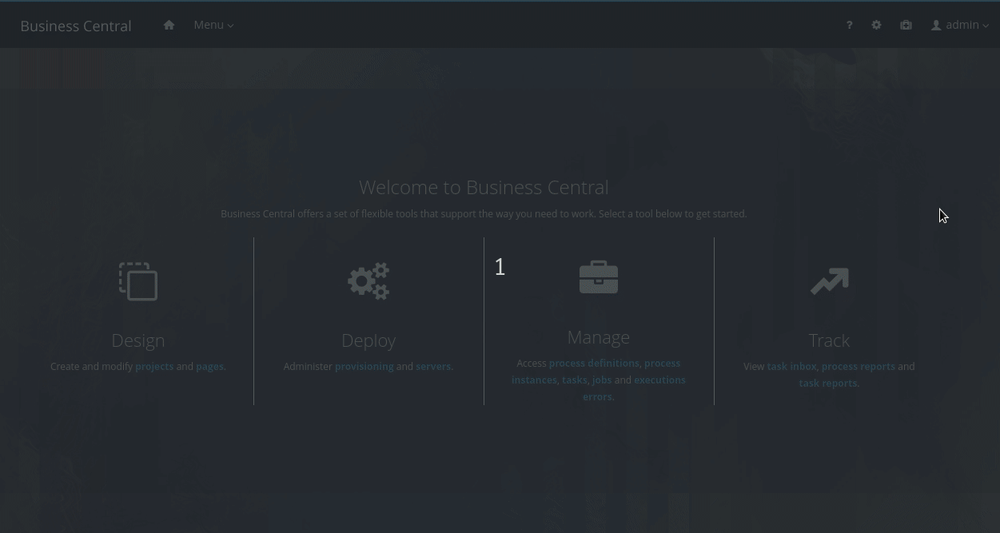
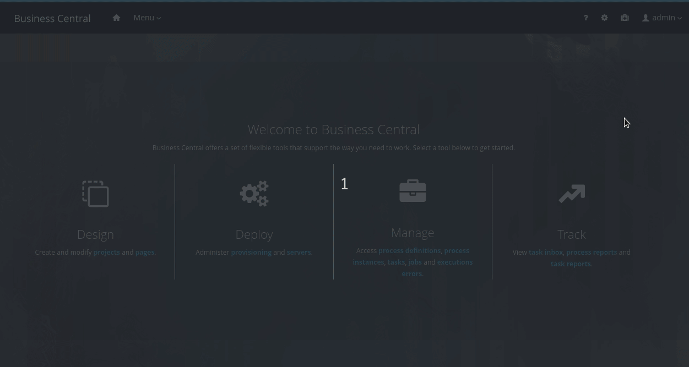
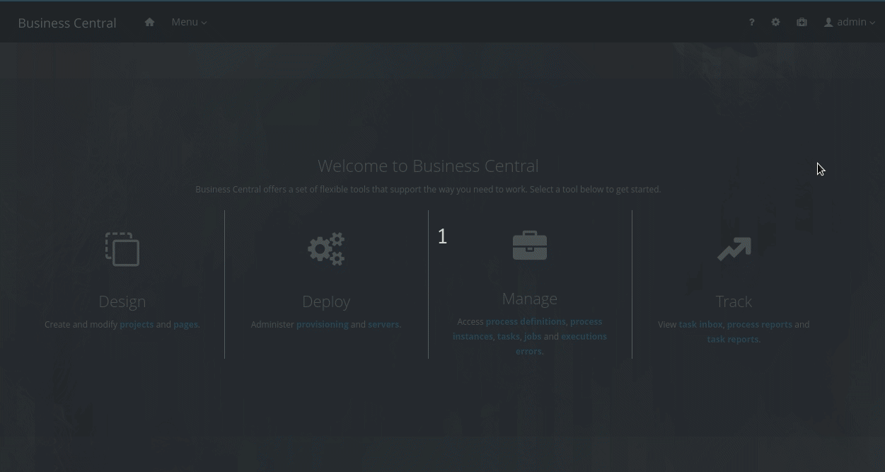
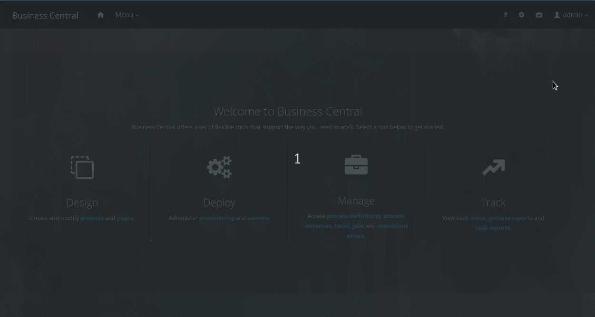
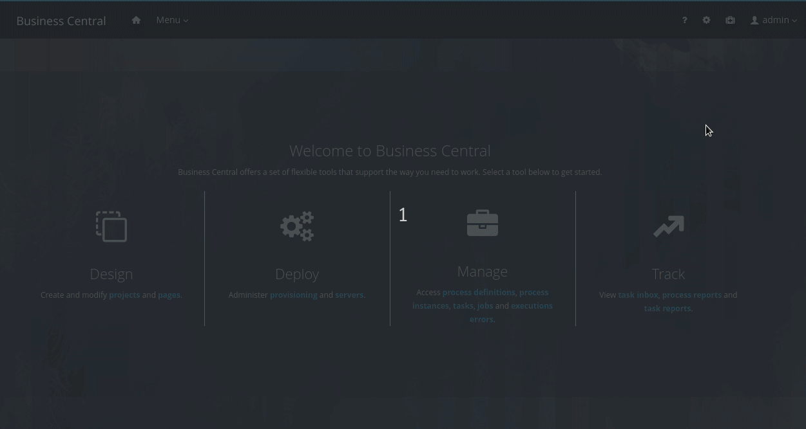
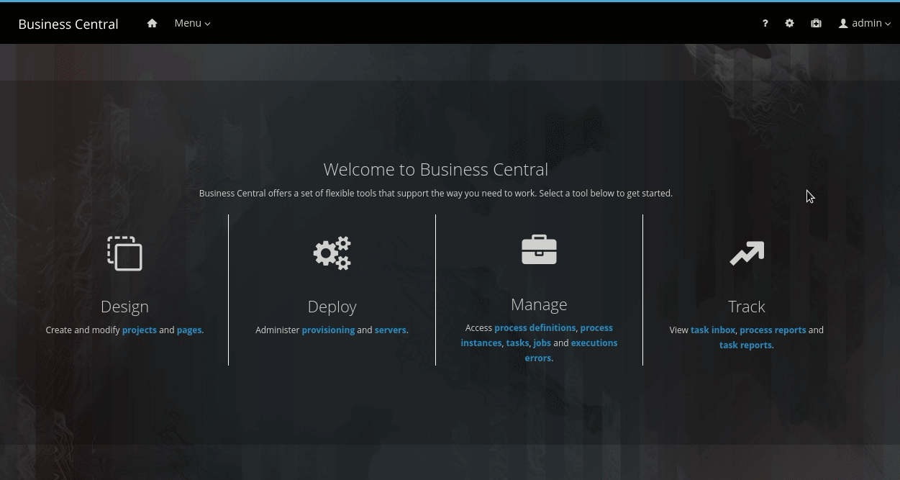

Maven archetype support in Business Central
What if your new projects have to follow some basic structure defined within your organization? Wouldn’t it be great if you could create new projects based on template projects? Well, leveraging from maven archetypes, the foundation team is introducing a mechanism to create projects based on templates. This feature has just been integrated into kiegroup master branches and soon will be available in Business Central releases.

Introduction
The Business Central authoring environment makes it easy to create new projects and, then, populate them with business rules and processes, among other assets. However, there might be cases in the organization where a common file structure needs to be set up every time new projects are created. Hence, having a mechanism to create projects based on templates seems something mandatory to both facilitate setting up a new project and also contribute to the team’s agility.
To achieve this goal, the foundation team is introducing the maven archetypes support in Business Central. For those not familiar with maven archetypes, they are basically projects installed in maven repositories where a template structure is set up and can be generated from when requested.
If you are interested in learning more about archetypes and how to create them, here are the official pages that you can refer to, respectively: Introduction to Archetypes and Guide to Creating Archetypes. You are only 4 simple steps away from creating your awesome archetype. 😆
And to make it even easier the task of creating your maven archetype, I’ve prepared a GitHub repository containing a basic KIE module structure so you can easily customize it based on your needs. In this simple template, you will find a data object, a rule, a DMN file, and a BPMN file.
After cloning the repository that I’ve previously mentioned, optionally change the GAV (Group Id, Artifact Id, and Version) information corresponding to your archetype, and also replace the contents in the archetype-resources folder with your assets. Finally, execute “mvn install” in the root folder to install the archetype.
Once the archetype is installed in the maven repository, users can easily add them to Business Central and use them as templates when creating new projects. This feature is divided into three areas: Global settings, Space settings, and New project from template. The following sections briefly walk through each one of them.
Global settings
Named Archetypes, a new card has been added in the Global settings and is available to users who have permission to read the Archetype Management Perspective. In such a perspective, users can list, add, delete, and do additional actions on their archetypes. Let’s inspect each one of the operations.
Listing archetypes
Go to Global settings → Archetypes to list all archetypes that have been added in Business Central. The list of archetypes is shown in a table fashion, containing details of the archetypes, status, and available actions.
The status of the archetype can be valid (green icon) or invalid (red icon). If the archetype is invalid, place the mouse cursor over the red icon and check the error message to get hints about the problem. Additionally, the status can contain a blue icon meaning the corresponding archetype is the default one for new spaces.

Adding an archetype
Assuming the archetypes are already installed in the maven repository, the add operation is pretty straightforward. Go to Global settings → Archetypes and click on the Add Archetype button. In the form that is shown, provide the GAV information of the archetype and click on the Add button. Business Central will then validate the archetype and make it available for being used as a template in all spaces.

Deleting an archetype
Go to Global settings → Archetypes and locate the archetype to be deleted. Click on the kebab button (3 dots) in the Actions column to show the dropdown list of actions. Then click on Delete and confirm the operation.

Additional actions
Besides deleting an archetype, the dropdown menu accessed via the kebab button provides two more actions: Set as default and Validate. As the name suggests, the former action simply sets the archetype as the default one for new spaces. The latter, on the other hand, validates whether the archetype is valid or not to be used. Notice that, when Business Central is starting up, all registered archetypes are automatically validated.

Space settings
Once archetypes are added in the Global settings, they are available to be used as templates in all spaces. However, not all archetypes are important for all spaces and, for that reason, a Settings tab has been added in each space to manage the archetypes. Notice that, this tab is only visible to users who have permission to update the space.
Go to Design → <your_space> → Settings and a screen similar to the project settings will be shown. For now, the space settings only contains the Archetypes section. An archetype table similar to the one that we have seen in the Global settings is shown in the aforementioned section. Their differences are that archetypes can be included or not to be used in the space, and only the Set as default action is available, which sets the default archetype only for that particular space. After making changes, do not forget to save them all by clicking on the Save button.

New project from template
Now that the archetypes and space are set up, go to Design → <your_space> and click on the Add Project button. As always, provide the information on the new project and click on Configure Advanced Options. Then, enable the project creation from the template by clicking on the Based on template checkbox. The archetype previously set as default in the space settings will be automatically selected but the user can also choose other archetypes in the dropdown list. Finally, click on the Add button and the project will be created based on the selected archetype.

Demonstration
Let’s demonstrate the entire flow in the following video.
And that’s all for today. Thanks for reading! 😃
Maven archetype support in Business Central was originally published in kie-tooling on Medium, where people are continuing the conversation by highlighting and responding to this story.